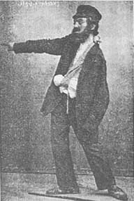
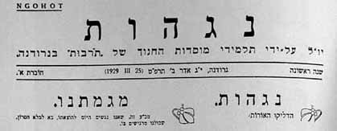
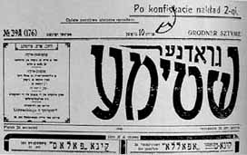
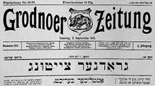
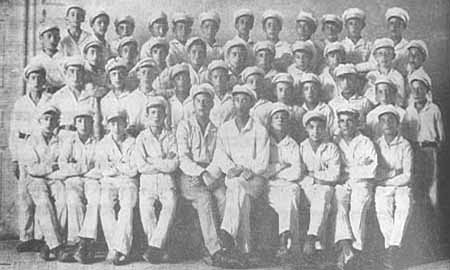

|
||||||||||||||
BETWEEN THE WORLD WARS - 4Cultural Life. Jewish Grodno was a beehive of cultural activity. The city was a magnet for theater companies, actors, singers, famous cantors, renowned choirs, intellectuals, and public figures from Poland and elsewhere. Visitors included Ze’ev Jabotinsky, Shaul Tchernichowsky, and Chaim Nahman Bialik, who was surprised to hear the local children speaking Hebrew. The visitors met with the townspeople in the Great Synagogue or in one of the many batei midrash. A large number of dramatic groups were active in the city, for the most part in Yiddish. The Polish authorities, however, tried to counteract this trend, levying heavy taxes on Yiddish performances, making it difficult for Jewish theater groups to rent halls, and, in particular, setting stringent conditions in order to obtain a permit for Jewish productions. So as to circumvent this discrimination the Jews founded the Yiddish Teater Gesellschaft theater society, which was affiliated with the Va’ad ha-Kehillah and had considerable success in its confrontations with the municipal authorities. An important achievement was that the municipal theater was made available for Jewish productions eight times a month free of charge. The mandolin orchestra of the CISHO school  Shimon Finkel from Eretz-Israel performing in Grodno  Title-page of Jewish publication  Title-page of Jewish publication  Title-page of Jewish newspaper Particularly notable among the many Jewish choirs and orchestras in Grodno were the choir of the Great Synagogue and the brass band of the city’s firefighters, which was almost entirely Jewish. Orchestras were also maintained by Tarbut institutions, sports associations, and Jewish youth organizations, such as the string orchestra of the Dror-Freiheit youth movement and the mandolin orchestra of the CISHO school. The major figure in the city’s musical life was Reuven Vigderowitz – choirmaster, teacher, and composer – who was also a famous harmonica virtuoso. He conducted students’ choirs, including the Tarbut choir, and adult choirs such as “Hashmona’i” (Hasmonean, the name given to the Maccabee choir after it was shut down by the authorities). In 1937–1938 Vigderowitz formed a popular choir of 120 men and women. This was a considerable accomplishment given the deteriorating economic situation and the charged atmosphere created by the surging antisemitism. The choir performed in the municipal theater and in the surrounding area. Most of its members were workers and Bund members (initially they refused to sing Bialik’s “After My Death” in Hebrew, which was set to music by Vigderowitz, but finally they yielded to their conductor’s importunings). Maccabee sportsmen  Maccabee sportsmen Various Yiddish daily papers and weeklies were published in Grodno, providing the Jewish population with information about events in the community, the municipality, and on job openings, as well as reporting critically on the Va’ad ha-Kehillah and other Jewish institutions. Much was written about harmful actions taken by the authorities and by the non-Jewish population and about the struggle of the Jews to realize their rights. In large part these were national papers in Yiddish, originating in Warsaw and other cities, with only the front and back pages printed locally. But Grodno also had its own papers. The daily Grodner Moment began to appear on September 5, 1924, edited by David Berezowski, and continued publication until the outbreak of World War II, except between 1928 and 1931, when it was replaced by the Unser Grodner Ekspress. In the 1930s, the Grodner Kurrier was published as an afternoon edition of Grodner Moment. Grodner Radio and Heintike Neies (“Daily News”), both of which appeared in Grodno in 1931, were published in Warsaw and brought to Grodno, where local items were added, such as announcements about meetings for the benefit of the unemployed, information about the orphanage, and the like. Grodner Leben (“Grodno Life”) was a nonparty daily edited by Shmuel Garbe and appeared from 1936 to 1939. Notable among the Jewish weeklies were: Unser Leben (“Our Life”), the first Zionist weekly in Grodno, which began publication in 1926-1927, and was edited by Yitzhak Solowieyczyk, with Zvi Bielko as chief contributor; the Bund’s Grodner Shtimme (“Voice of Grodno”), founded in 1927 – its first editor (until 1935) was Moshe Rubinstein – appeared regularly until the start of the war, even though it constantly incensed the authorities, who often tried members of its editorial board; and Unser Wort (“Our Word”), the journal of the Working Eretz Israel Movement, which began to appear in 1933, and was edited by A. Palnitsky. Sport. Several Jewish sports clubs operated in Grodno, most notably Maccabee (founded in 1919), which, thanks to its excellent reputation, enjoyed the support of the city’s affluent population. The club ran a good soccer team, and its track and field branch was also well developed. However, for a time the Polish government prohibited its operation. In 1924, the club operated secretly under other names, such as “Hashmona’i,” but a year later resumed activity under its own name and even added new sports, such as bicycling, boxing, skiing, and a section for military training; in 1938, basketball was also added. The Ha-Koah (“Power”) association, founded by Poalei Zion-ZS, was the first manifestation of the party’s sports movement in Poland, preceding Hapoel. Ha-Koah ran teams in soccer, gymnastics, table tennis, and chess. The many youngsters who were active in this club were inculcated with the ideology of the Dror movement. In 1928, the Bund established the Morgenstern (“Morning Star”) sports club, which featured several gymnastics groups, a soccer team, and a table tennis section. The club also published a bulletin called Arbeter Sportler, which was circulated throughout Poland. Ha-Shomer ha-Za’ir also had its own sports organization, known as Shomriyah. Here the emphasis was on gymnastics and volleyball. Shomriyah members participated in an annual sports demonstration held in the city. Home |
||||||||||||||